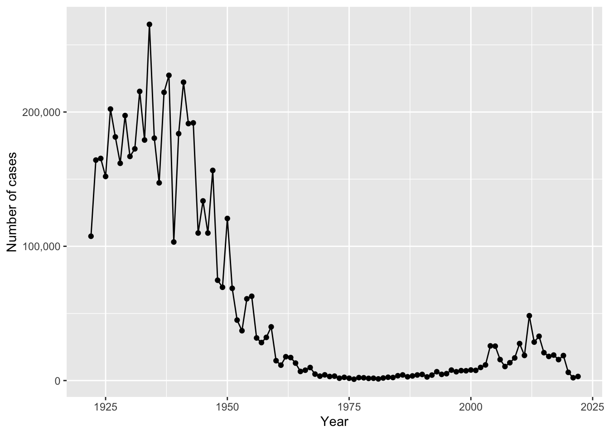
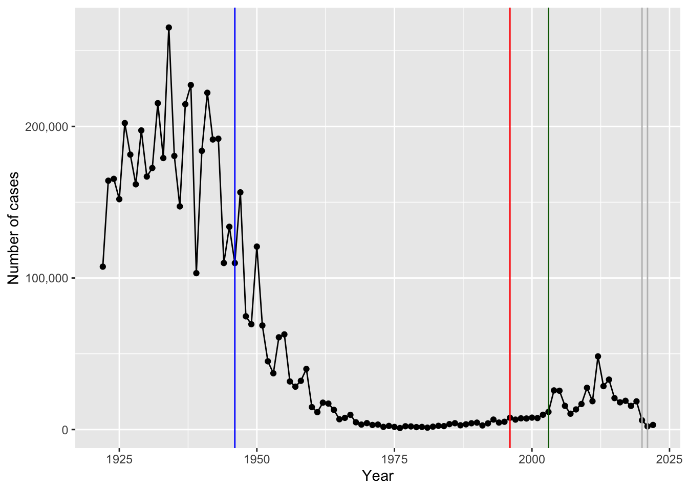

# Getting the dataframe from a pdf
cdc <- data.frame(
year = c(
1922L, 1923L, 1924L, 1925L,
1926L, 1927L, 1928L, 1929L, 1930L, 1931L,
1932L, 1933L, 1934L, 1935L, 1936L,
1937L, 1938L, 1939L, 1940L, 1941L, 1942L,
1943L, 1944L, 1945L, 1946L, 1947L,
1948L, 1949L, 1950L, 1951L, 1952L,
1953L, 1954L, 1955L, 1956L, 1957L, 1958L,
1959L, 1960L, 1961L, 1962L, 1963L,
1964L, 1965L, 1966L, 1967L, 1968L, 1969L,
1970L, 1971L, 1972L, 1973L, 1974L,
1975L, 1976L, 1977L, 1978L, 1979L, 1980L,
1981L, 1982L, 1983L, 1984L, 1985L,
1986L, 1987L, 1988L, 1989L, 1990L,
1991L, 1992L, 1993L, 1994L, 1995L, 1996L,
1997L, 1998L, 1999L, 2000L, 2001L,
2002L, 2003L, 2004L, 2005L, 2006L, 2007L,
2008L, 2009L, 2010L, 2011L, 2012L,
2013L, 2014L, 2015L, 2016L, 2017L, 2018L,
2019L, 2020L, 2021L, 2022L
),
cases = c(
107473, 164191, 165418, 152003,
202210, 181411, 161799, 197371,
166914, 172559, 215343, 179135, 265269,
180518, 147237, 214652, 227319, 103188,
183866, 222202, 191383, 191890, 109873,
133792, 109860, 156517, 74715, 69479,
120718, 68687, 45030, 37129, 60886,
62786, 31732, 28295, 32148, 40005,
14809, 11468, 17749, 17135, 13005, 6799,
7717, 9718, 4810, 3285, 4249, 3036,
3287, 1759, 2402, 1738, 1010, 2177, 2063,
1623, 1730, 1248, 1895, 2463, 2276,
3589, 4195, 2823, 3450, 4157, 4570,
2719, 4083, 6586, 4617, 5137, 7796, 6564,
7405, 7298, 7867, 7580, 9771, 11647,
25827, 25616, 15632, 10454, 13278,
16858, 27550, 18719, 48277, 28639, 32971,
20762, 17972, 18975, 15609, 18617,
6124, 2116, 3044
)
)Classlab 15: Mini Project: Investigating Pertussis Resurgence
Background
- Systems vaccinology - Trying to understand how the immune system works and its relationship with vaccines
- Pertussis - Whopping cough; High contagious lung infection caused by the bacteria Bordetella pertussis
- 16 million cases and 200,000 associated infant deaths annually
- Can infect people of all ages but is most severe and life threatening for infants under a year old
- Transmission occurs primarily through bacteria laden respiratory droplets
- Pertussis develops in three main phases
- Catarrhal phase - Early symptoms; Runny nose cough, highly contagious
- Antibiotics used as treatment
- Paroxysmal phase - Severe symptoms; Paroxysms, whopping sound, exhaision
- Antibiotics can help but it more so prevents the spread
- Convalescent phase - Recovery phase
- Catarrhal phase - Early symptoms; Runny nose cough, highly contagious
- Different vacinnes
- Whole cell vaccines (wP) vaccine
- Acellular (aP) vaccine
- FHA - Adhesion proteins
- History of vaccines
- 1578: First epidemic record
- 1679: The Name “Pertussis” First Appears
- 1900: Discovery of Bordetella pertussis → First observed that it was a bacteria
- 1906: Causative Bacteria Isolated
- 1942: First DPT Vaccine causing a decline in cases in the next 30 years
- 1970s - 1980s: Antivax movements and massive lawsuits causing a rise in the disease
- 1986: Nation childhood vaccine injury act
- 1992: aP Vaccine Approved in the U.S.
- 2010 - present: Pertussis outbreak in infants
- CMI-PB Project: A new systems vaccinology project is launced that combines systems biology and genomics to provide a more holistic picture of protective pertussis-specific immune mechanisms. The project provides the scientific community with comprehensive, high-quality, and freely accessible resources related to Pertussis booster vaccination.
Pertussis, aka whopping chouch, is a high infection disease cause by the bactera B. Pertussis
The CDC tracks pertussis cases numbers per year. Let’s have a closer look at this data: CDC data
1. Investigating pertussis cases by year
Q1. With the help of the R “addin” package datapasta assign the CDC pertussis case number data to a data frame called cdc and use ggplot to make a plot of cases numbers over time.
Trouble, Data is in a pdf format :(
So, we will use the datapasta R pacakge to “scrape” this data into R:
- Install package in console:
install.package('datapasta') - Copy table into clipboard
- Go into addins at the top ->
Paste as data.frame
# Call the ggplot2 package
library(ggplot2)
library(scales)# Building the plot
baseplot <- ggplot(cdc) +
aes(x = year,
y = cases) +
geom_point() +
geom_line() +
labs(x = "Year",
y = "Number of cases") +
scale_y_continuous(labels = comma) # No longer scientific notation
baseplot
2. A tale of two vaccines (wP & aP)
Q2. Using the ggplot geom_vline() function add lines to your previous plot for the 1946 introduction of the wP vaccine and the 1996 switch to aP vaccine (see example in the hint below). What do you notice?
- First whole-cell vaccine (wP) roll out in 1940
- Switch to acellular vaccine (aP) in 1996
- Covid in 2020-2021
# Landmark plot
lm_plot <- baseplot +
geom_vline(xintercept = 1946, # wC vaccine with everything
col = 'blue') +
geom_vline(xintercept = 1996, # aP vaccine with "essential components"
col = 'red') +
geom_vline(xintercept = 2003, # Start of the big increase
col = 'darkgreen') +
geom_vline(xintercept = c(2020,2021), # Covid-19 lockdowns
col = 'grey')
lm_plot
Q3. Describe what happened after the introduction of the aP vaccine? Do you have a possible explanation for the observed trend?
We went from ~200,000 cases prewP vaccine to ~1,000 cases in 1976. However after the introduction of the aP vaccine we see a slight shift upwards in the number of cases after ~10 years with a big increase in 2004. This could be due to the sparked controversy of vaccines and an uprise in antivax movements, bacterial evolution due to an increase amount of antibiotic use, or the aP vaccine is not as effective (not as long lasting). And we see the last one as there is ~10 year lag from a roll out to increasing case numbers
Key Question: Why does the aP vaccine induced immunity wane faster than that of the wP vaccine?
3. Exploring CMI-PB data
The new and ongoing CMI-PB project aims to provide the scientific community with this very information: CMI-PB
We have datasets from a total of seven assays, each accompanied by its corresponding metadata. All experimental data and metadata are stored and managed in a relational database management system (RDBMS): Data Composition
To study the long-term effects of priming between the acellular-pertussis (aP) vs. whole-cellular pertussis (wP) vaccines, we have recruited individuals born prior to 1995 and those born after: Study Outline